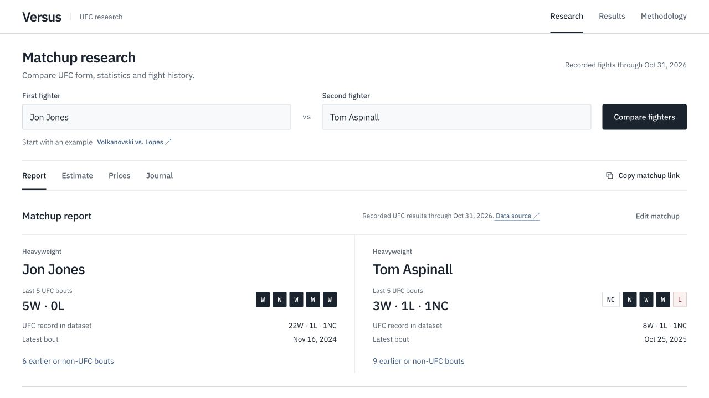
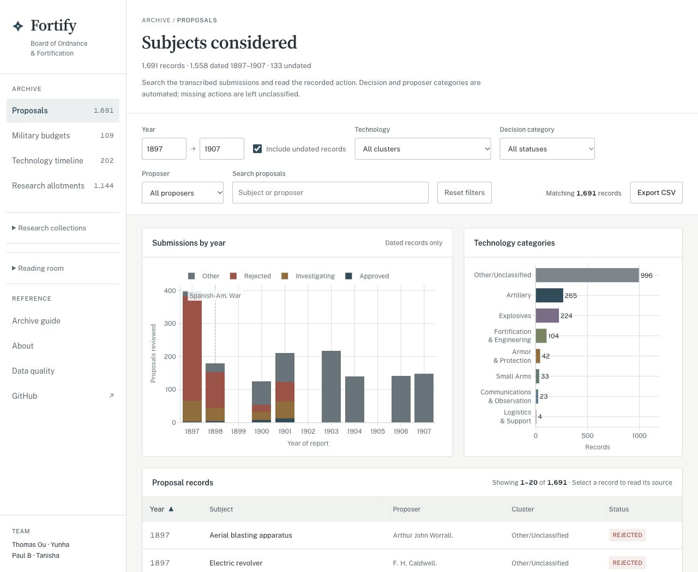
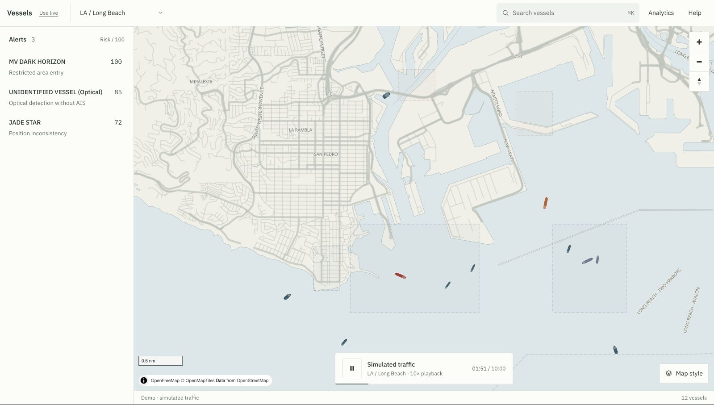
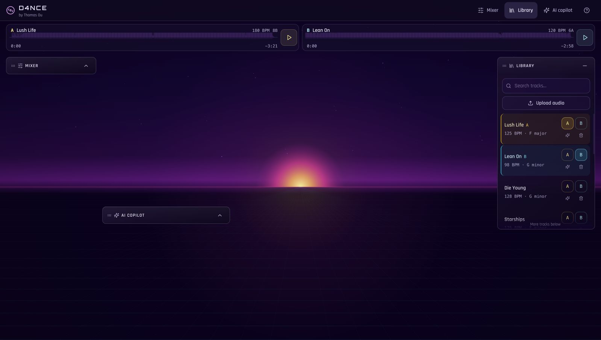
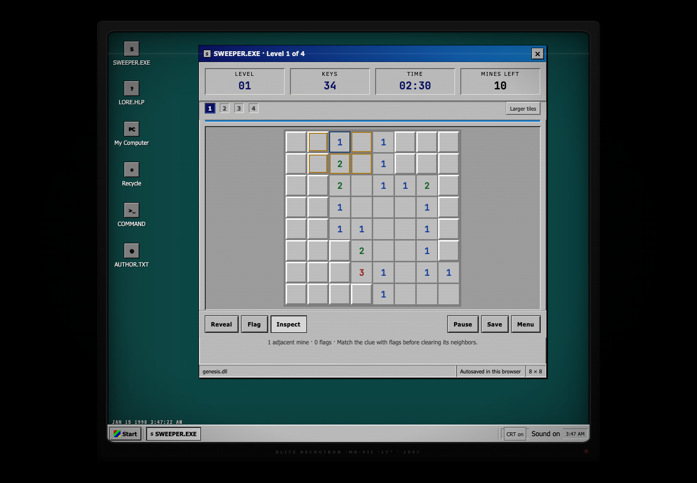
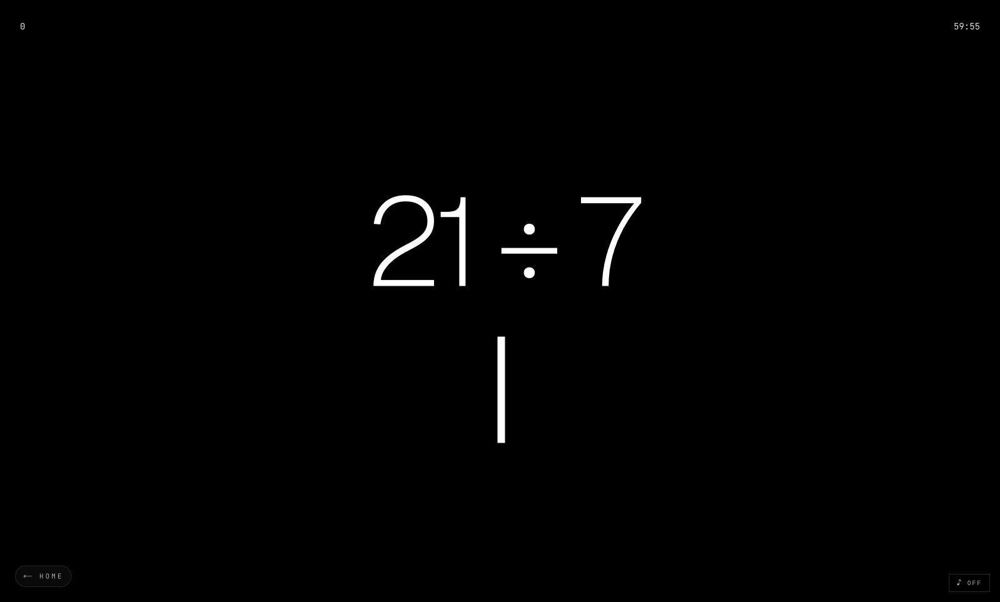

UFC matchups, fighter records, and the numbers behind a fight.
A collection of my thoughts.

UFC matchups, fighter records, and the numbers behind a fight.

An archive of defense proposals, funding records, and technology reviews.

Vessel tracking and activity alerts on a maritime map, using simulated traffic.

A two-deck DJ workstation with effects and an AI mixing copilot.

Daily Minesweeper and timed runs in a Windows 98 desktop.

Mental arithmetic against the clock. Practice, puzzles, and ranked play.